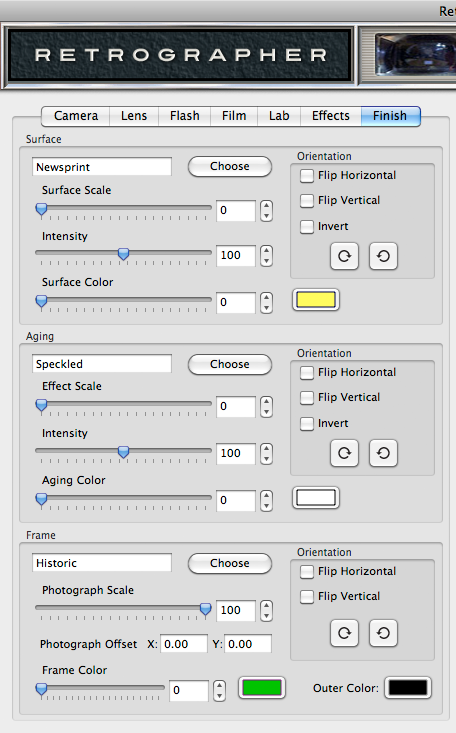
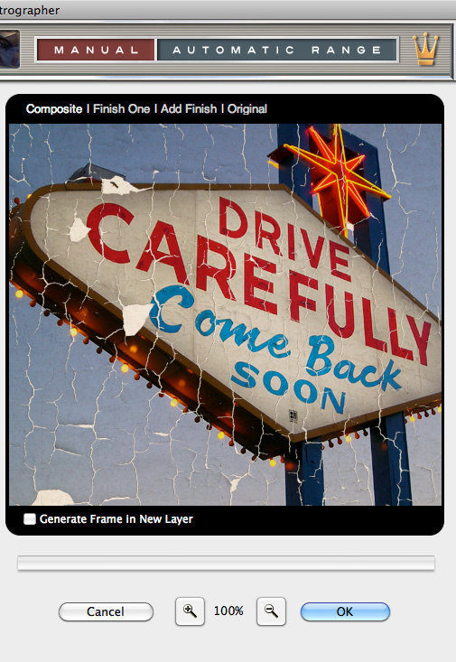

Let's Learn About Retrographer
Finish Settings
After your perfect photograph has been created, it's time for some expert photographic finishing to turn your photographic dreams in to reality. Simply click the Finish tab along the top of the UI to access this section.
|  |
Add a Photographic Surface to Your Image
- Choose Your Surface - Simply click the Choose button to launch the Photographic Surface Effect Picker. As you click on each effect, you will see it update the image in the Preview window in realtime. To see a preview of all the effects available in the picker applied to your image, simply click the eyeball icon along the bottom. Click the arrow icons along the top of the picker to see more options.
Once you've selected the desired surface effect you'd like to use, Click Apply to select and apply the chosen effect or click Cancel to leave the picker dialog.
After you've selected the desired surface you'd like to use, you can adjust the controls within the Surface dialog box to fine tune the surface. Additionally, you can select a different surface at any time and your current settings will be applied to the new surface. All other surface controls will remain disabled until a surface has been selected. - Surface Scale - Using the slider control, you may enlarge or reduce the size of the surface or simply enter a number in the text entry field to the right.
- Surface Intensity - Increase or fade the surface visibility by moving the slider control or by simply entering a number in the text entry field to the right.
- Surface Color - Simply click the color swatch icon to the right of the Surface Color slider to launch the color picker to select the color you'd like to apply to the surface. Use the Surface Color slider to desaturate the surface color to its own color.
Adjust the Photographic Surface Orientation
- Flip Horizontal - Click the checkbox to flip the surface horizontally.
- Flip Vertical - Click the checkbox to flip the surface vertically.
- Invert - Click the Invert checkbox to inverse the surface.
- Rotate - Click either rotate button to rotate the surface in 90 degree increments.

Aging Your Image
- Choose Your Aging Effect - Simply click the Choose button to launch the Aging Effect Picker. As you click on each effect, you will see it update the image in the Preview window in realtime. To see a preview of all the effects available in the picker applied to your image, simply click the eyeball icon along the bottom. Click the arrow icons along the top of the picker to see more options.
Once you've selected the desired aging effect you'd like to use, Click Apply to select and apply the chosen effect or click Cancel to leave the picker dialog.
After you've selected the desired aging effect you'd like to use, you can adjust the controls within the Aging dialog box to fine tune the aging effect. Additionally, you can select a different aging effect at any time and your current settings will be applied to the new aging effect. All other aging effect controls will remain disabled until an aging effect has been selected. - Effect Scale - Using the slider control, you may enlarge or reduce the size of the aging effect or simply enter a number in the text entry field to the right.
- Intensity - Increase or fade the aging effect visibility by moving the slider control or by simply entering a number in the text entry field to the right.
- Aging Color - Simply click the color swatch icon to the right of the Aging Color slider to launch the color picker to select the color you'd like to apply to any eroded aging effects applied to the surface. Use the Aging Color slider to desaturate the surface color to its own color. This control will remain disabled if a surface has not been defined above or if the aging effect does not erode to reveal the surface below.
Adjust the Aging Effect Orientation
- Flip Horizontal - Click the checkbox to flip the aging effect horizontally.
- Flip Vertical - Click the checkbox to flip the aging effect vertically.
- Invert - Click the Invert checkbox to inverse the aging effect.
- Rotate - Click either rotate button to rotate the aging effect in 90 degree increments.
Add a Frame to Your Image
- Choose Your Frame - Simply click the Choose button to launch the Frame Picker. As you click on each frame, you will see it update the image in the Preview window in realtime. To see a preview of all the frames available in the picker applied to your image, simply click the eyeball icon along the bottom. Click the arrow icons along the top of the picker to see more options.
Once you've selected the desired frame you'd like to use, Click Apply to select and apply the chosen frame or click Cancel to leave the picker dialog.
After you've selected the desired frame you'd like to use, you can adjust the controls within the Frame dialog box to fine tune the frame. Additionally, you can select a different frame at any time and your current settings will be applied to the new frame. All other frame controls will remain disabled until a frame has been selected. - Photograph Scale - Using the slider control, you may enlarge or reduce the size of the image within the frame opening or simply enter a number in the text entry field to the right.
- Photograph Offset - If you look in the preview window, you'll notice a small crosshair icon which indicates the center of the photograph inside the frame. To modify the position of the photograph within the frame, hold down the Command (Apple) key (or the Ctrl key on Windows) then click and drag the crosshair icon within the Preview window. For more precise control, you may also adjust the numbers in the X and Y coordinate boxes respectively.
- Frame Color - Simply click the color swatch icon to the right of the Frame Color slider to launch the color picker to select the color you'd like to apply to the surface. Use the Frame Color slider to desaturate the surface color to its own color.
- Outer Color - Simply click the color swatch icon to launch the color picker to select the fill color you'd like to apply outside of the frame.
Adjust the Frame Orientation
- Flip Horizontal - Click the checkbox to flip the frame horizontally.
- Flip Vertical - Click the checkbox to flip the frame vertically.
- Rotate - Click either rotate button to rotate the frame in 90 degree increments.
Working with the Preview Window
- Preview Options - Above the Preview window at right, you'll notice some viewing options. By default the Composite option is selected to show you what all combined tabbed section effects look like applied to the image. At any time you can click the Original option to toggle between the unaffected image and a preview of the filtered image with all effects applied or click the Lab Effects option to view just the lab effects applied to the image.
- Preview Options - Finish Multiplier - By default you are only working with a single finish effect (Finish One), by clicking the Add Finish option, you can now define an additional finish effect with its own settings (Finish Two). You can easily toggle between each finish effect by clicking Finish One or Finish Two or click Composite to view the fully composited preview with both finish effects applied in addition to all combined tabbed section effects. At any time you can delete either finish effect by clicking the red close box icon to the right of the lens name.
* NOTE - While you may create multiple finish effects, only a single frame may be defined. - Magnifying the Preview - Below the Preview window, you'll see the magnification controls. By clicking the appropriate icon (- or +), you can increase or decrease the magnification of the Preview window. The current level of magnification is shown between the magnification icons.
- Moving the Preview - When you have increased magnification and wish to view the texture effect on the rest of the image not visible in the Preview window, simply move your mouse into the Preview window and click and drag your image around to reveal the texture effected image.
- Generate Frame in New Layer* - Simply enable this option if you want the plug-in to output the frame on a new layer above the filtered image.
* NOTE - This option is only displayed in Adobe Photoshop and other imaging applications that support layering.
Applying the Aging Effects to Your Image - Once you're satisfied with your finish effect settings, you can continue to define more settings in other tabbed sections, or simply click the OK button below the Preview window to apply the filter with the current settings. Clicking Cancel closes the plug-in without applying the effect.